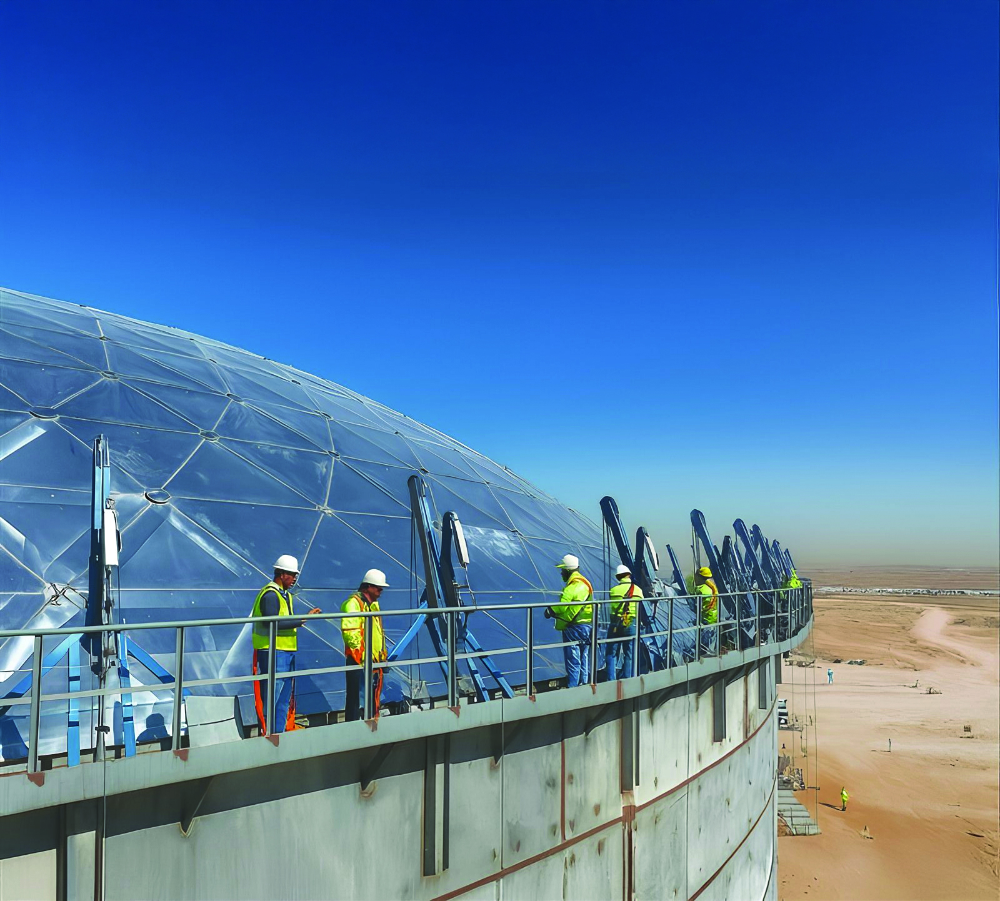

Why Khatib & Alami
More than a job: a career worth building
Discover why thousands of professionals choose K&A: landmark projects across 40+ countries, multidisciplinary teams, structured growth paths, and a culture that invests in the people behind the work.
Explore Roles by Discipline
Browse roles across our core disciplines.

Engineering & Design
Civil, structural, MEP, and architectural engineering across buildings, transport, water, and energy. From concept to detailed design, our engineers and architects shape projects that define skylines and serve communities.

Construction Supervision
On-site oversight, works inspection, quality assurance, and HSE control. Our resident engineers and inspectors make sure every project is built to the design, on schedule, and to international standards.

Project & Program Management
End-to-end PMC services across multi-year programs: planning, scheduling, cost control, contract administration, risk, and stakeholder coordination, helping clients deliver complex capital projects with confidence.

Planning & Urban Design
Master planning, urban design, and landscape architecture. Shaping cities, districts, and public realms across the region, from new urban centres to mixed-use destinations and revitalised waterfronts.

Digital & Technology
BIM, GIS (ESRI Platinum Partner), remote sensing, digital twins, and AI-driven solutions. Our award-winning Digital Services team builds the tools and platforms behind smarter design and project delivery.

Environment & Sustainability
Environmental impact assessments, ESG advisory, climate resilience, water resources, and green-building certification. Sustainability principles embedded into every discipline and every stage of project delivery.

Facilities Management
Operations, maintenance, and asset management for buildings and infrastructure across their full lifecycle. From hard and soft FM services to performance-driven asset advisory and lifecycle optimisation.

Business Services
Finance, HR, Legal, IT, Communications, and Business Development. The corporate teams that keep a 6,500-strong, 30+ office firm running smoothly and growing across the region and beyond.

Internship & Graduate
Just Starting Your Career?
Internships and graduate programs across all our disciplines. Real project exposure from week one, mentorship from senior engineers, and a clear path into a full-time role.
Find Internship & Graduate Opportunities
Life at K&A
For over 60 years, K&A has built a workplace where collaboration, continuous learning, and shared values drive every project. Our 6,500+ people in 30+ offices come from 25+ nationalities and work across architecture, engineering, planning, and digital services.
Discover our culture, benefits, inclusion commitments, and what it's like to be part of our global team.
See What It's Like to Work HereStories Behind K&A Impact
Meet the people shaping their careers at Khatib & Alami

"I joined K&A as a junior and within a few years I was leading a major design package. The mentorship here is exceptional. People invest in you."
Anna
Senior Architect • Dubai

"What sets K&A apart is the collaborative spirit. Engineers, architects, and planners work together from day one, and the projects are genuinely landmark."
Baraa
Infrastructure Engineer • Riyadh

"The diversity of projects is incredible. One month I'm on a sustainable tower, the next I'm planning urban infrastructure across a new district."
Fadel
Urban Planner • Abu Dhabi

"K&A invests in cutting-edge technology and continuous learning. I've grown more here than I did anywhere else. The scale of the work pushes you."
Hajj Hassan
BIM Specialist • Dubai

"The culture is what kept me. People are generous with their time and knowledge, and every project team feels like a small family you actually want to belong to."
Maria
Senior Project Manager • Beirut

Explore Projects You'll Work On
From transformational urban districts to landmark infrastructure, K&A delivers work of lasting significance across 40+ countries. Discover the projects shaping the region — and the kind of work you could be part of.
View K&A Projects